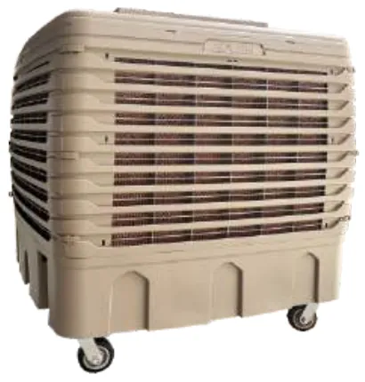

Aolan Wind Auramo
مكيف صحراوي صناعي 16,000 م³/ساعة بخزان 100 لتر
مكيف بتدفق 16,000 م³/ساعة مع خزان مياه 100 لتر وهيكل بلاستيكي، متوفر بمروحة طرد مركزي بإنفرتر (170 باسكال) أو مروحة محورية بتحكم سيليكون. يمكن تخصيص الجهد الكهربائي حسب بلد الاستيراد.
تدفق الهواء16,000 m³/h
القدرة1 kW – 0.75 kW
مساحة التبريد لكل وحدة90–100 m²
تحميل حاوية 40HQ40
الموديل: AZL16-LX10JZ, AZL16-LS10JZ, AZL16-LC10JZ, AZL16-ZX10J, AZL16-ZS10J, AZL16-ZC10J
المواصفات الفنية
| الموديل | AZL16-LX10JZ AZL16-LS10JZ AZL16-LC10JZ | AZL16-ZX10J AZL16-ZS10J AZL16-ZC10J |
|---|---|---|
| مصدر الكهرباء | 220 V، أحادي الطور، 50 Hz (قابل للتخصيص) | |
| القدرة | 1 kW | 0.75 kW |
| التيار المقنن (أمبير) | 6.5 | 4.0 |
| تدفق الهواء (م³/ساعة) | 16,000 | |
| نوع المروحة | طرد مركزي | محوري |
| سرعة المروحة | متعدد السرعات، إنفرتر | متعدد السرعات، تحكم سيليكون |
| الضغط الاستاتيكي (باسكال) | 170 | 160 |
| مقاس فتحة الهواء (مم) | 555×555 | |
| مستوى الضوضاء (ديسيبل) | ≤63 | ≤65 |
| الأبعاد ط×ع×ار (مم) | 1078×1078×1020 (سفلي)، 1078×1078×1055 (علوي)، 1104×1078×1020 (جانبي) | |
| مقاس خلية التبريد (مم) | (608+30)×732×100 / (608+30)×732×80 | (608+30)×732×100 |
| الوزن الصافي (كجم ±3) | 64 (سفلي)، 66 (علوي)، 76 (جانبي) | 56 (سفلي)، 58 (علوي)، 68 (جانبي) |
| سعة خزان الماء (لتر) | 100 | |
| مادة الهيكل | بلاستيك | |
| وحدة التحكم | اختياري | |
| التبريد المسبق | اختياري | |
| التحكم الجماعي | اختياري | |
| التحكم بالحرارة والرطوبة | اختياري | |
| عدد الوحدات في حاوية 40HQ (مجمّعة) | 40 | |
| عدد الوحدات في حاوية 40HQ (SKD مفككة جزئياً) | 87 (سفلي)، 75 (علوي)، 85 (جانبي) | |
X = تصريف سفلي، S = تصريف علوي، C = تصريف جانبي
الاستخدامات
المصانع الصغيرة والمتوسطة، المكاتب، المطاعم شبه المفتوحة، أماكن المعارض الخارجية.
المواصفات من كتالوج Aolan 2026. قد تتغير الموديلات والمواصفات، يرجى التأكيد قبل الطلب.


تريد سعر Wind Auramo؟
احصل على سعر الجملة والتوفر في باكستان وخيارات الشحن بالحاوية إلى بلدك.